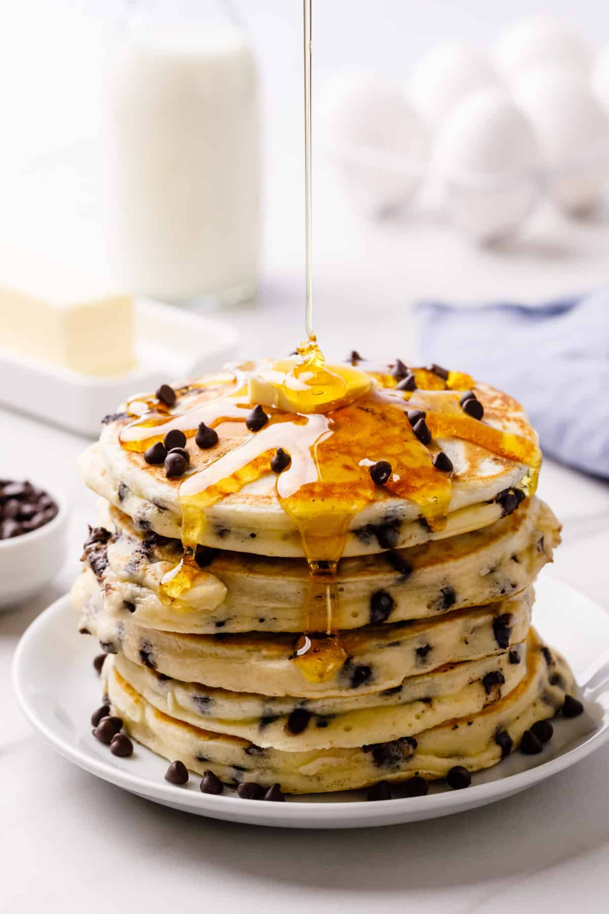

Chocolate Chip Pancakes

Description
A fluffy and round flat cake filled within gooey chocolate chips
Ingredients
- 3/4 cup milk
- 2 table spoons white vinegar
- 1 cup all-purpose white sugar
- 1 teaspoon baking powder
- 1/2 teaspoon baking soda
- 1/4 teaspoon salt
- 1 large egg
- 2 tablespoons unsalted butter, melted
- 1 teaspoon vanilla extract
- 1/2 cup miniature chocolate chips, or more to taste
- cooking spray
Steps
- Combine milk and vinegar in a bowl and set aside for 5 minutes to "sour" the milk. You are essentially making your own buttermilk with this step.
- Combine flour, sugar, baking powder, baking soda, and salt in a large mixing bowl.
- Whisk egg, butter, and vanilla extract into "soured" milk until well combined. Pour flour mixture into the wet ingredients and whisk until just combined. Fold in chocolate chips. Batter will be thick. Allow batter to rest for 5 minutes.
- Heat a large skillet over medium-low heat, and coat with cooking spray.
- Pour about ¼ cup of batter for each pancake onto the skillet. Cook until bubbles appear on the surface, 2 to 4 minutes. Flip pancake with a spatula, and cook until browned on the other side, 2 to 3 more minutes. Repeat with remaining batter. Serve immediately.